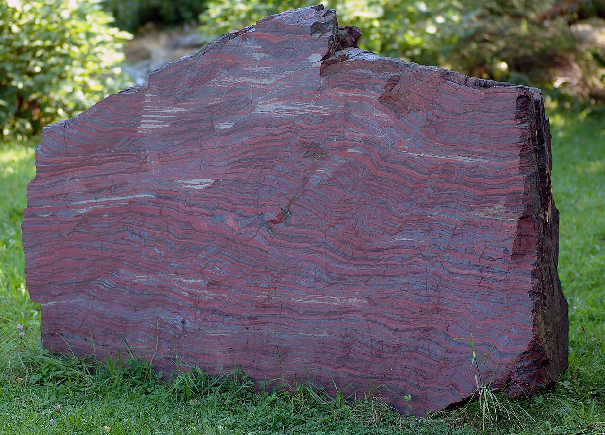
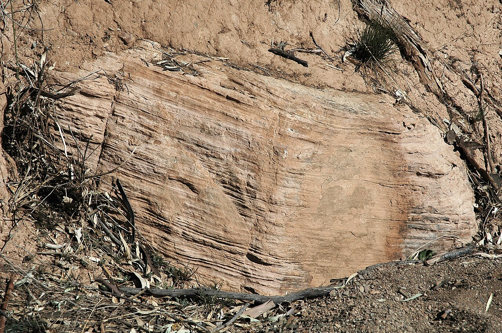
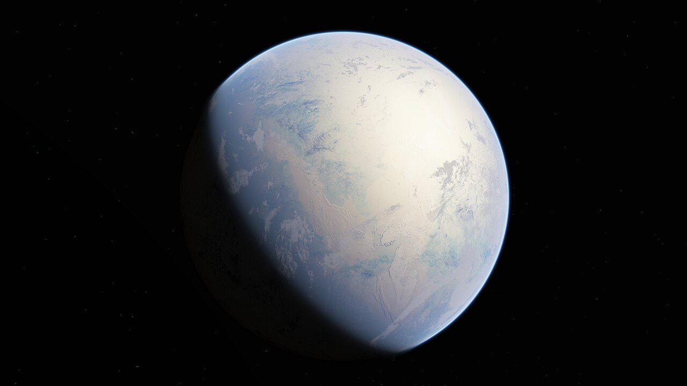
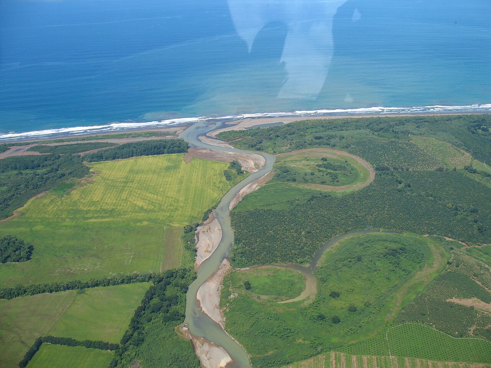
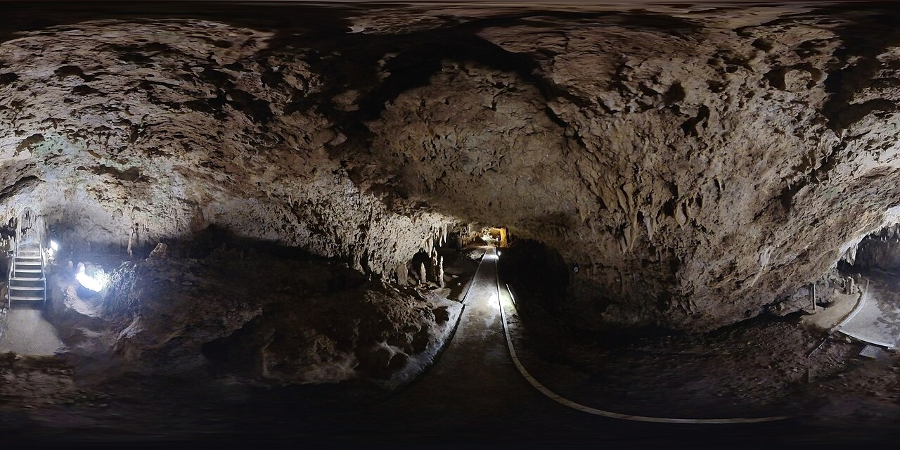
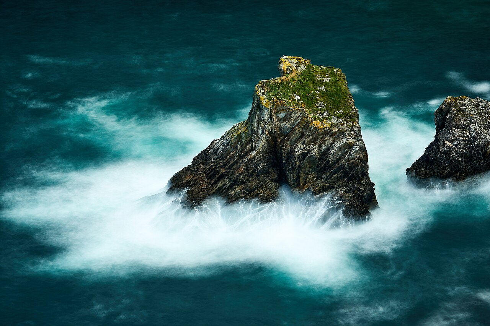

생명이 없었다면 이 광물들도 없었다?
교과서 p. 16학습 목표
- 지구시스템이 진화해 온 역사에서 산소, 탄소, 물의 순환을 통해 지권·기권·수권이 변화해 왔음을 추적할 수 있다.


이 광물들은 어떻게 생길 수 있었을까?
힌트 1
자철석은 철과 산소가 결합한 광물이다.
힌트 2
방해석은 칼슘과 탄산 이온(탄소)이 결합한 광물이다.
생각해 보기
원시 지구에 없던 산소는 누가 만들었을까?
자철석·방해석이 생긴 까닭을 자유롭게 발표하게 한 뒤, '생명체가 지구시스템을 바꾸고, 바뀐 지구시스템이 다시 생명체에 영향을 준다'는 이 차시의 큰 질문으로 연결합니다. 교과서 운영안은 3차시(산소의 순환 / 탄소의 순환 / 물의 순환)입니다.
2차시(100분) 수업 운영안
| 차시 | 단계 | 시간 | 활동 |
|---|---|---|---|
| 1차시 | 동기 유발 | 5분 | 자철석·방해석 사진, "생명이 만든 광물" 질문 |
| 지구시스템의 구성 | 10분 | 네 권역(+외권) 정리, 권역 간 상호작용 예 찾기 | |
| 핵심 개념 1 | 25분 | 대기 조성 그래프 해석(시뮬레이션 1) → 산소의 순환 경로 → 호상철광층(시뮬레이션 2) | |
| 정리 | 10분 | O/X ①, 산소 순환 경로 그리기 | |
| 2차시 | 핵심 개념 2 | 20분 | 탄소의 저장소와 순환 → 얼음덩어리 지구 5단계(시뮬레이션 3) |
| 핵심 개념 3 | 12분 | 물의 분포·체류 시간 → 지형 인터랙티브 그림 | |
| 공진화 정리 | 8분 | 생명과 행성이 함께 변한 4장면 정리 | |
| 형성 평가 | 10분 | 문항 풀이, 스스로 확인하기 |
들어가기 · 지구시스템은 무엇으로 이루어져 있을까? 기초 다지기
- 지구시스템: 지구를 이루는 요소들이 서로 영향을 주고받으며 이루는 하나의 시스템. 각 권역은 물질과 에너지를 끊임없이 주고받는다.
| 권역 | 범위 | 특징 |
|---|---|---|
| 기권 | 지구를 둘러싼 기체 층 | 날씨 변화가 일어남, 오존층이 자외선을 흡수 |
| 지권 | 지표와 지구 내부 | 지각·맨틀·외핵·내핵. 액체 외핵이 지구 자기장을 만들어 태양풍을 막음 |
| 수권 | 물이 있는 곳 전체 | 해수·빙하·지하수·하천·호수. 약 97%가 바닷물, 민물은 대부분 빙하와 지하수 |
| 생물권 | 생명체가 사는 곳 | 지금까지 태양계에서 지구에서만 확인됨 |
| 외권 | 기권 바깥의 우주 공간 | 태양 에너지가 들어오고 지구 복사가 나가는 통로. 지금은 유성체 외에 물질 출입이 거의 없음 |
대기 조성의 변화와 산소의 순환
교과서 p. 16 ~ 17(1) 해 보기 · 지구 대기의 조성 변화 분석하기
- 원시 대기: 화산 활동으로 수증기·이산화 탄소·질소 등이 공급되었고, 산소는 거의 없었다.
- 가장 많던 수증기는 응결해 비로 내려 원시 바다가 되었고, 이산화 탄소는 원시 바다가 생긴 뒤 급격히 줄었다.
- 산소는 바다에서 생물이 광합성을 하면서 늘어나기 시작했다.
그래프를 보고 답해 보자
- 대기 중 질소, 이산화 탄소, 산소의 분압은 시간에 따라 어떻게 달라졌는가?
- 이와 같은 대기 조성 변화가 나타난 까닭은 무엇인가?
2. 이산화 탄소는 바닷물에 녹아 탄산염으로 침전되고, 생물체에 흡수되어 석회암이 되면서 줄었다. 산소는 약 35억 년 전 광합성 생물이 나타난 뒤 만들어졌지만, 처음에는 곧바로 다른 물질과 결합해 대기에 쌓이지 못했다. 광합성량이 늘어나면서 약 25억 년 전부터 대기에 쌓이기 시작했다.
(2) 산소의 순환
- 물질의 순환: 지권·기권·수권·생물권 사이에서 물질이 이동하며 도는 현상. 지구의 역사를 보면 산소·탄소·물의 순환을 통해 각 권역이 변해 왔다.
- 산소는 어디에? 산소는 규산염 광물과 산화 광물의 형태로 지각과 맨틀에 가장 많지만, 고체로 고정되어 있다. 그래서 산소를 순환시키는 주된 요인은 생물의 광합성이다.
- 호상철광층의 형성: 광합성 생물이 나타나기 전 바다에는 철이 녹아 있었다. 약 35억 년 전 남세균이 광합성으로 산소를 내놓자, 산소는 바닷물 속 철과 반응해 자철석·적철석 같은 철 산화 광물이 되었다. 이 광물이 퇴적물과 함께 해저에 쌓여 호상철광층이 되었다.
- 대기에 산소 축적: 이 과정은 바닷물 속 철이 대부분 사라질 때까지 계속되었고, 그 뒤 바다와 대기에 산소가 쌓이기 시작했다. → 산소가 생물권 → 수권 → 지권으로 순환한 결과
- 그 밖의 순환: 암석 속 산소가 풍화 작용으로 나오기도 하고, 해양 생물 껍데기의 산소가 해저에 쌓여 석회암이 되기도 한다.
- 오늘날: 산소는 반응성이 커서 시간이 지나면 줄어야 하지만, 광합성으로 계속 공급되고 생물의 호흡과 화학 작용으로 소비되어 대기 중 농도가 일정하게 유지된다.
자세히 알아보기 ① 산소는 어디에 있고, 어떻게 돌까? 심화 정리
- 산소의 저장소: 대부분은 규산염 광물과 산화 광물 속 원자로 지각과 맨틀에 묶여 있다. 기권·수권·생물권에 있는 양은 상대적으로 적다.
- 산소가 들고 나는 길
- 공급: 생물의 광합성 (가장 중요한 공급원), 광물의 풍화로 일부 방출
- 소비: 생물의 호흡, 사체의 부패, 화석 연료의 연소, 암석의 산화
- 저장: 조개·산호 껍데기의 산소가 해저에 쌓여 석회암으로
- 균형: 공급과 소비가 비슷해 대기 중 산소 농도가 비교적 일정하게 유지된다.
• 붉은 층: 철 성분이 많다(자철석·적철석). 바닷물에 산소가 넉넉해 녹아 있던 철 이온이 산화 철로 많이 가라앉은 시기
• 회색 층: 철이 적고 규질 성분이 많다(처트·셰일). 산소가 부족해 철이 덜 가라앉은 시기
• 형성 시기: 주로 약 25억~20억 년 전. 두께는 수백 m, 길이는 수백 km에 이르기도 한다.
• 오늘날 인류가 쓰는 철광석의 상당 부분이 이 호상철광층에서 나온다. 생명이 만든 지층이 산업의 재료가 된 셈이다.
개념 확인 ① O/X
탄소의 순환과 얼음덩어리 지구
교과서 p. 18 ~ 19(1) 석회암에 갇힌 탄소
- 탄소는 지구시스템의 각 권역에 다양한 형태로 존재하며, 권역 사이의 상호작용 과정에서 끊임없이 순환한다.
- 원시 대기의 이산화 탄소는 원시 바다가 생긴 뒤 급격히 줄었다.
- 대기의 CO₂ → 바닷물에 탄산 이온으로 녹아듦
- 탄산 이온 + 칼슘 이온 → 탄산염으로 해저에 침전
- 또는 해양 생물체에 흡수 → 껍데기가 쌓여 석회암으로 지권에 고정
- 이 과정에서 대기의 조성과 바닷물의 성분이 함께 변했고, 지권에는 대규모 석회암 퇴적층이 생겼다. 석회암층은 탄소를 기권·수권에서 떼어 내 오랫동안 지권에 저장한다.
- 오늘날: 암석의 풍화·침식으로 바다에 들어온 칼슘 이온이 탄산 이온과 반응해 석회암이 계속 생긴다. 그래서 자연적인 원인만으로는 대기 중 이산화 탄소 농도가 크게 높아지지 않는다.
(2) 얼음덩어리 지구: 탄소의 순환이 지구를 녹이다
- 얼음덩어리 지구: 지구 표면 전체가 눈과 얼음으로 덮여 커다란 얼음덩어리처럼 보이는 상태이다.
- 이때는 대기 중 이산화 탄소가 바다에 녹는 과정이 중단된다. 그런데 화산 활동은 계속되므로 이산화 탄소가 대기에 계속 쌓인다.
- 쌓인 이산화 탄소의 온실 효과로 지구 평균 기온이 크게 올라 전 지구를 덮던 얼음이 녹았다.
- 얼음이 녹은 뒤 바다에 이산화 탄소가 다시 녹아들어 농도가 낮아졌고, 그 과정에서 빙하 퇴적층 바로 위에 두꺼운 석회암층이 쌓였다.

- ① 온실 효과 약화탄산염이 생기는 등으로 대기 중 CO₂가 줄어 온실 효과가 약해지자 극지방 바다가 얼기 시작한다.
- ② 얼음덩어리 지구얼음 면적이 넓어져 햇빛 반사율이 높아지고, 기온이 더 내려가 지구 전체가 얼음에 덮인다.
- ③ 탄소 교환 중단바다가 얼음에 덮여 기권과 수권 사이의 탄소 교환이 멈춘다. 화산에서는 CO₂가 계속 방출되어 대기에 쌓인다.
- ④ 얼음이 녹음대기 중 CO₂가 크게 늘어 온실 효과가 강해지자 지구를 덮던 얼음이 녹는다.
- ⑤ 석회암층 형성CO₂가 다시 바닷물에 녹아들어 탄산염으로 침전되며 빙하 퇴적층 위에 석회암층이 쌓이고, 온실 효과는 약해진다.
(3) 자료실 · 얼음덩어리 지구와 다세포 생물의 출현
- 얼음덩어리 지구가 생긴 원인은 아직 분명하지 않지만, 약 23억 년 전, 7억 년 전, 6억 5천만 년 전에 그런 시기가 있었다는 것은 사실로 받아들여진다.
- 얼음덩어리 지구 상태에서도 해저 화산 활동이 이어지며 생물의 영양분이 바다에 쌓였다.
- 얼음에서 벗어나 따뜻해진 지구에서는 이산화 탄소와 영양 물질이 풍부해 광합성 생물이 빠르게 늘었고, 산소 농도가 빠르게 상승했다.
- 그 결과 약 6억 3500만 년 전부터 독특한 모양의 다양한 다세포 생물이 나타났다. 오스트레일리아 남부 에디아카라 지역에서 많이 발견되어 에디아카라 생물군이라고 부른다.
- 이처럼 탄소의 순환은 지권·기권·수권뿐 아니라 생물권에도 큰 영향을 주었다. 단세포 생물이 주를 이루던 지구가 다세포 생물의 지구로 바뀐 것이다.
자세히 알아보기 ② 탄소의 저장소와 순환 경로 심화 정리
| 권역 | 탄소의 모습 |
|---|---|
| 기권 | 이산화 탄소(CO₂), 메테인 |
| 수권 | 바닷물에 녹은 탄산 이온·탄산수소 이온 |
| 지권 | 석회암(탄산염) — 가장 큰 저장소, 석탄·석유·천연가스 |
| 생물권 | 생물의 몸을 이루는 유기물 |
- 대기로 나오는 길: 화산 활동, 생물의 호흡, 화석 연료의 연소
- 대기에서 빠져나가는 길: 광합성으로 생물에 흡수, 빗물·바닷물에 용해
- 지권에 갇히는 길: 바닷물에 녹은 탄소가 칼슘과 만나 석회암으로 침전, 생물이 죽어 쌓여 석회암·화석 연료로
- 바다의 온도와 탄소: 바닷물이 따뜻해지면 녹아 있던 CO₂가 대기로 빠져나가고, 차가워지면 더 많이 녹아든다(탄산음료가 따뜻하면 김이 빨리 빠지는 것과 같다).
약 7억 2천만 년 전 무렵 초대륙 로디니아가 갈라지면서 해안선과 비가 많은 땅이 늘어 암석의 화학적 풍화가 활발해졌다고 본다. 풍화는 대기의 CO₂를 바닷물에 녹여 탄산염으로 묶어 두므로 온실 효과가 약해졌다. 얼음이 넓어지자 햇빛 반사율이 커져 더 추워졌고, 결국 적도 근처까지 얼어붙었다. 이 상태는 약 7억 2천만~6억 3천5백만 년 전 사이에 수천만 년 동안 이어졌을 것으로 추정한다.
개념 확인 ② O/X
물의 순환과 지권의 변화
교과서 p. 20 ~ 21(1) 물은 어디에 있고, 어떻게 순환할까?
- 물의 분포: 물의 대부분은 바다에 있다. 육지의 물은 대부분 빙하이고, 지하수·하천·호수, 토양과 퇴적물 속에도 있다. 기권에서는 수증기, 생물권에서는 생명체를 이루는 성분으로 존재한다.
- 순환 과정: 바다와 육지의 물이 증발하거나 식물의 증산 작용으로 대기로 이동한다 → 수증기가 응결해 구름이 된다 → 강수로 지표에 떨어진다 → 일부는 하천수·지하수가 되어 바다로 가고, 일부는 빙하가 된다.
- 물은 기체·액체·고체로 상태를 바꾸며 권역 사이를 끊임없이 순환하고, 이 과정의 풍화·침식·운반·퇴적 작용이 지권을 계속 변화시킨다.
(2) 물의 순환이 만드는 지형과 자연 현상
- 하천수: 경사에 따라 유속이 달라지며 풍화·침식·운반·퇴적 작용을 일으킨다. → V자곡, 곡류, 삼각주
- 지하수: 석회암 지대에서 땅속으로 스며든 물이 석회암을 녹인다. → 석회 동굴
- 해수: 바닷가에서 침식·퇴적 작용을 일으킨다. → 해식 절벽, 해식 동굴, 해빈
- 빙하: 중력으로 낮은 곳으로 이동하며 침식·운반·퇴적한다. → U자곡, 빙하 퇴적물
- 기상과 생명: 물의 순환 과정에서 비·눈·태풍 같은 기상 현상이 일어나고, 증발량과 강수량은 기후에 영향을 준다. 하천과 바다는 수중 생물의 서식처가 되고, 토양의 물은 식물의 광합성에 쓰인다.
정리: 생명과 행성의 공진화
- 약 46억 년 전 지구가 탄생한 뒤 지권·기권·수권이 서로 영향을 주고받으며 생명체가 살 수 있는 환경이 만들어졌고, 이후 생명체는 지구시스템과 영향을 주고받으며 함께 진화해 왔다.
- 공진화: 밀접한 관계에 있는 둘 이상의 대상이 서로의 진화에 영향을 주며 함께 진화하는 현상
- 산소·탄소·물의 순환은 생명체와 지구시스템의 긴밀한 상호작용을 보여 주는 예이다. 지구의 역사는 생명과 행성이 공진화해 온 기록이라고 할 수 있다.
| 물질 | 순환의 주된 과정 | 지구시스템에 남긴 변화 |
|---|---|---|
| 산소 | 광합성 → 바닷물 속 철과 결합 → 해저 침전 | 호상철광층(지권), 대기 산소 증가(기권) |
| 탄소 | CO₂ → 바닷물에 용해 → 탄산염·생물 껍데기 → 석회암 | 석회암층(지권), 대기 CO₂ 감소, 얼음덩어리 지구의 생성·소멸 |
| 물 | 증발·증산 → 응결 → 강수 → 하천수·지하수·빙하 → 바다 | 다양한 지형(지권), 기상·기후, 생물의 서식처 |
자세히 알아보기 ③ 물의 분포, 체류 시간, 그리고 에너지 심화 정리
- 분포: 지구 물의 약 97.5%는 바닷물 같은 염수이고, 나머지 민물(담수)도 대부분 빙하와 지하수이다. 우리가 바로 쓰기 쉬운 강·호수의 물은 아주 적다.
- 양은 일정: 물은 상태를 바꾸며 권역 사이를 돌지만, 지구 전체의 물의 양은 거의 변하지 않는다.
| 물이 머무는 곳 | 평균 체류 시간 (대략) |
|---|---|
| 대기 (수증기) | 약 1~2주 |
| 하천 | 약 2주 |
| 호수·저수지 | 약 10년 |
| 빙하 | 수천~1만 년 |
| 바다 | 약 4000년 |
- 물의 순환과 에너지: 물이 증발할 때 주변에서 열을 흡수하고, 수증기가 응결할 때 열을 내놓는다(잠열). 구름 속 물은 높은 곳에 있어 위치 에너지를, 비·하천은 흐르며 운동 에너지를 가진다. 이 에너지가 침식·운반을 일으켜 지형을 바꾼다.
- 순환의 원동력: 태양 복사 에너지(증발)와 중력(강수·하천의 흐름)
자세히 알아보기 ④ 생명과 행성의 공진화, 그리고 인간 심화 정리
- 지구는 알맞은 거리(액체 물)와 충분한 크기(오래 유지되는 내부 열)를 갖추어, 권역들이 안정적으로 발달하고 생명이 나타날 수 있었다.
- 인간도 지구시스템의 일부이다. 화석 연료 사용으로 대기 중 CO₂가 늘고 생물다양성이 줄고 있다. 46억 년 동안 이어진 공진화의 관점에서 지구 환경을 지속 가능하게 지키려는 노력이 필요하다.
개념 확인 ③ O/X
물의 순환에 의한 지형의 형성 과정 추론하기
교과서 p. 20 ~ 21해 보기 · 지형 사진을 보고 형성 과정 추론하기



1. 각 지형의 형성 과정을 추론해 보자.
석회 동굴: 석회암 지대에서 땅속으로 스며든 물이 석회암을 서서히 녹인다. 이 과정이 오래 계속되면 빈 공간이 커져 동굴이 된다.
해식 동굴·해식 기둥: 파도가 해안 암석이나 지층의 약한 부분을 깎아 동굴을 만들고, 더 깎이면 단단한 부분만 기둥처럼 남는다.
2. 물의 순환이 지형의 형성에 주는 영향을 설명해 보자.
스스로 확인하기
1. 약 35억 년 전부터 남세균이 산소를 방출했지만 대기 중 산소 농도가 곧바로 증가하지 않은 까닭은?
2. 지구가 얼음덩어리 지구 상태에서 벗어날 수 있었던 과정을 탄소의 순환과 관련지어 설명해 보자.
'창의력 더하기'(지구 환경과 생명체를 주제로 시 짓기)는 차시 마무리 활동이나 과제로 활용할 수 있습니다.
개념 확인 문제
그림 출처
사진은 모두 Wikimedia Commons의 퍼블릭 도메인 또는 CC 라이선스 자료이며, 각 그림 아래에 저작자와 라이선스를 표시했습니다. 모식도와 시뮬레이션은 직접 만들었습니다.